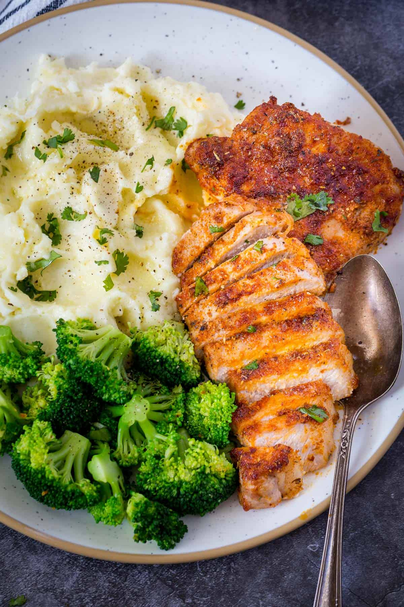

Air Fried Pork Chops Recipe

Description
Have you ever had pork chops turn out dry? That’s a common issue with
cooking pork chops at home. But, I’m here to tell you, it doesn’t have
to be that way! My secret weapon for no-fail juicy pork chops? Air frying!
Using your Air Fryer, it’s easy to make thick, juicy pork chops, every time.
Ingredients
- Pork Chops: Bone-in, center cut pork chops, about one-and-a-half inches thick.
- Olive Oil: For rubbing on the pork chops. You can also use avocado oil here.
- Brown Sugar: A little brown sugar makes the spice rub extra flavorful. Light or dark brown sugar is fine.
- Chili Powder, Paprika, and Ground Mustard: The perfect spice trio for pork! I use sweet paprika, but hot is fine if you want a bit of a kick.
- Salt and Pepper
- Garlic and Onion Powder: These two powders add intensity of flavor with no chopping or mincing.
Steps
- Preheat the Air Fryer. You should preheat your air fryer to 375˚F. Don’t skip the preheating step – it makes all the difference.
- Season the Pork Chops. While the air fryer preheats, rub oil into the pork chops. Then, in a small bowl, make the spice rub by combining the brown sugar, chili powder, paprika, ground mustard, salt, pepper, garlic powder, and onion powder. Season both sides of the pork chops with the rub.
- Air Fry! Arrange the seasoned pork chops in the air fryer basket. Cook them for 5 minutes, flip, and cook for 4 to 6 more minutes. The internal temperature of the pork chops should register at 145˚F.
- Enjoy! Transfer the pork chops to a plate and let stand for 5 minutes before serving with your favorite sides.